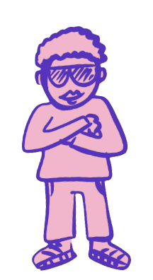

Your Personal Hype-Pal!
About iHype
iHype! is a software toy that aims to provide genuine motivation through interactive chat features, and recognizing and acknowledging the negative emotions people feel. These negative emotions are are part of life and much like guided meditation iHype! helps people reflect and decide their own path.
A person who is feeling down may not want to involve those around them or feels like a burden when asking for help or advice. They have to talk themselves up in order to keep events with friends, and can end up staying home. We hope to offer people a fun way to solve this problem while keeping true to themselves.
Launch iHype